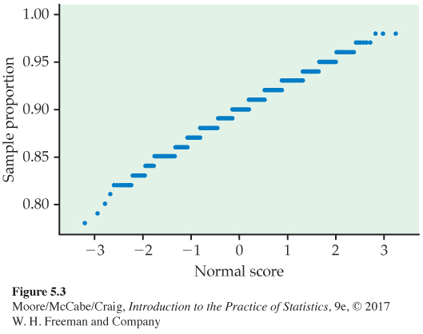

5.1 5.1 Toward Statistical Inference
282
When you complete this section, you will be able to:
• Identify parameters, populations, statistics, and samples and the relationships among these items.
• Use simulation to study a sampling distribution.
• Interpret and use a sampling distribution to describe a property of a statistic.
• Identify bias in a statistic by examining its sampling distribution and characterize an unbiased estimator of a parameter.
• Describe the relationship between the sample size and the variability of a statistic.
• Identify ways to reduce bias and variability of a statistic.
• Use the margin of error to describe the variability of a statistic.
A market research firm interviews a random sample of 1200 undergraduates enrolled in four-year colleges and universities throughout the United States. One result: the average number of hours spent online weekly is 19.0 hours. That’s the truth about the 1200 students in the sample. What is the truth about the millions of undergraduates who make up this population?
Because the sample was chosen at random, it’s reasonable to think that these 1200 students represent the entire population fairly well. So the market researchers turn the fact that the sample mean is hours into an estimate that the average time spent online weekly in the population of undergraduates enrolled in four-year colleges and universities is 19.0 hours.
That’s a basic idea in statistics: use a fact about a sample to estimate the truth about the whole population. We call this statistical inferencestatistical inference because we infer conclusions about the larger population from data on selected individuals.
To think about inference, we must keep straight whether a number describes a sample or a population. Here is the vocabulary we use.
PARAMETERS AND STATISTICS
A parameter is a number that describes the population. A parameter is a fixed number, but in practice, we do not know its value.
A statistic is a number that describes a sample. The value of a statistic is known when we have taken a sample, but it can change from sample to sample. We often use a statistic to estimate an unknown parameter.
283
EXAMPLE 5.1
Understanding the college student market. Since 1987, Student Monitor has published an annual market research study that provides clients with information about the college student market. The firm uses a random sample of 1200 students located throughout the United States.1 One phase of the research focuses on computing and technology. The firm reports that undergraduates spend an average of 19.0 hours per week on the Internet and that 88% own a cell phone.
The sample mean hours is a statistic. The corresponding parameter is the average (call it μ) of all undergraduates enrolled in four-year colleges and universities. Similarly, the proportion of the samplesample proportion who own a cell phone
is a statistic. The corresponding parameter is the proportionpopulation proportion (call it p) of all undergraduates at four-year colleges and universities who own a cell phone. We don’t know the values of the parameters μ and p, so we use the statistics and , respectively, to estimate them.
USE YOUR KNOWLEDGE
Question 5.1
5.1 Street harassment. A large-scale survey of 16,607 women from 42 cities around the world reports that 84% of women experience their first street harassment before the age of 17.2 Describe the statistic, population, and population parameter for this setting.
Sampling variability
If Student Monitor took a second random sample of 1200 students, the new sample would have different undergraduates in it. It is almost certain that the sample mean would not again be 19.0. Likewise, we would not expect there to be exactly 1056 students who own a cell phone. In other words, the value of a statistic will vary from sample to sample. This basic fact is called sampling variabilitysampling variability: the value of a statistic varies in repeated random sampling.
Random samples eliminate any preferences or favoritism from the act of choosing a sample, but they can still be misleading because of this variability that results when we choose at random. For example, what if a second random sample of 1200 undergraduates resulted in only 57% of the students owning a cell phone? Do these two results, 88% and 57%, leave you more or less confident in the value of the true population proportion? When sampling variability is too great, we can’t trust the results of any one sample.
simple random samples and bias, p. 174
We can assess this variability by using the second advantage of random samples (the first advantage being the elimination of bias). Specifically, the fact that if we take lots of random samples of the same size from the same population, the variation from sample to sample will follow a predictable pattern. All of statistical inference is based on one idea: to see how trustworthy a procedure is, ask what would happen if we repeated it many times.
284
To understand why sampling variability is not fatal, we ask, “What would happen if we took many samples?” Here’s how to answer that question for any statistic:
• Take a large number of random samples of size n from the same population.
• Calculate the statistic for each sample.
• Make a histogram of the values of the statistic.
• Examine the distribution displayed in the histogram for shape, center, and spread, as well as outliers or other deviations.
In practice, it is too expensive to take many samples from a large population such as all undergraduates enrolled in four-year colleges and universities. But we can imitate taking many samples by using random digits from a table or computer software to emulate chance behavior. This is called simulationsimulation.
EXAMPLE 5.2
Simulate a random sample. Let’s simulate drawing simple random samples (SRSs) of size 100 from the population of undergraduates. Suppose that, in fact, 90% of the population owns a cell phone. Then the true value of the parameter we want to estimate is p = 0.9. (Of course, we would not sample in practice if we already knew that p = 0.9. We are sampling here to understand how the statistic behaves.)
random digits, p. 179
For cell phone ownership, we can imitate the population by a table of random digits, with each entry standing for a person. Nine of the 10 digits (say, 0 to 8) stand for students who own a cell phone. The remaining digit, 9, stands for those who do not. Because all digits in a random number table are equally likely, this assignment produces a population proportion of cell phone owners equal to p = 0.9. We then simulate an SRS of 100 students from the population by taking 100 consecutive digits from Table B. The statistic is the proportion of 0s to 8s in the sample.
Here are the first 100 entries in Table B with digits 0 to 8 highlighted:
| 19223 | 95034 | 05756 | 28713 | 96409 | 12531 | 42544 | 82853 |
| 73676 | 47150 | 99400 | 01927 | 27754 | 42648 | 82425 | 36290 |
| 45467 | 71709 | 77558 | 00095 |
There are 90 digits between 0 and 8, so . We are fortunate here that our estimate is the true population value p = 0.9. A second SRS based on the second 100 entries in Table B gives a different result, . The third SRS gives the result . All three sample results are different. That’s sampling variability.
USE YOUR KNOWLEDGE
Question 5.2
5.2 Using a random numbers table. In Example 5.2, we considered p = 0.9 and used each entry in Table B as a person for our simulations. Suppose instead that p = 0.85. How might we use Table B for simulations in this setting?
Sampling distributions
Simulation is a powerful tool for studying chance variation. Now that we see how simulation works, it is faster to abandon Table B and to use a computer to generate random numbers. This also allows us to study other statistics, such as the sample mean, when the population cannot be easily imitated by a table of random numbers. We address the sampling distribution of in the next section.
285
EXAMPLE 5.3
Take many random samples. Figure 5.1 illustrates the process of choosing many samples and finding the statistic for each one. Follow the flow of the figure from the population at the left, to choosing an SRS and finding the for this sample, to collecting together the ’s from many samples. The histogram at the right of the figure shows the distribution of the values of from 1000 separate SRSs of size 100 drawn from a population with p = 0.9.
histogram, p. 14
Of course, Student Monitor samples 1200 students, not just 100. Figure 5.2 is parallel to Figure 5.1. It shows the process of choosing 1000 SRSs, each of size 1200, from a population in which the true proportion is p = 0.9. The 1000 values of from these samples form the histogram at the right of the figure. Figure 5.1 and 5.2 are drawn on the same scale. Comparing them shows what happens when we increase the size of our samples from 100 to 1200. These histograms display the sampling distribution of the statistic for two sample sizes.
286
SAMPLING DISTRIBUTION
The sampling distribution of a statistic is the distribution of values taken by the statistic in all possible samples of the same size from the same population.
Strictly speaking, the sampling distribution is the ideal pattern that would emerge if we looked at all possible samples of size n (here, 100 or 1200) from our population. A distribution obtained from a fixed number of trials, like the 1000 trials in Figure 5.1 and 5.2, is only an approximation to the sampling distribution. We will see that probability theory, the mathematics of chance behavior, can sometimes describe sampling distributions exactly. The interpretation of a sampling distribution is the same, however, whether we obtain it by simulation or by the mathematics of probability.
USE YOUR KNOWLEDGE
Question 5.3
5.3 Poker winnings. Doug plays poker with the same group of friends once a week for three hours. At the end of each night, he records how much he won or lost in an Excel spreadsheet. Does this collection of amounts represent an approximation to a sampling distribution of his weekly winnings? Explain your answer.
We can use the tools of data analysis to describe any distribution. Let’s apply those tools to Figure 5.1 and 5.2.
• Shape: The histograms look Normal. Figure 5.3 is a Normal quantile plot of the values of for our samples of size 100. It confirms that the distribution in Figure 5.1 is close to Normal. The 1000 values for samples of size 1200 in Figure 5.2 are even closer to Normal. The Normal curves drawn through the histograms describe the overall shape quite well.
• Center: In both cases, the values of the sample proportion vary from sample to sample, but the values are centered at 0.9. Recall that p = 0.9 is the true population parameter. Some samples have a less than 0.9 and some greater, but there is no tendency to be always low or always high. That is, has no bias as an estimator of p. This is true for both large and small samples. (Want the details? The mean of the 1000 values of is 0.8985 for samples of size 100 and 0.8994 for samples of size 1200. The median value of is exactly 0.9 for samples of both sizes.)
Figure 5.3: Figure 5.3 Normal quantile plot of the sample proportions in Figure 5.1. The distribution is close to Normal except for some clustering due to the fact that the sample proportions from a sample of size 100 can take only values that are a multiple of 0.01.287
• Spread: The values of from samples of size 1200 are much less spread out than the values from samples of size 100. In fact, the standard deviations are 0.0304 for Figure 5.1 and 0.0083 for Figure 5.2.
Although these results describe just two sets of simulations, they reflect facts that are true whenever we use random sampling.
Bias and variability
Our simulations show that a sample of size 1200 will almost always give an estimate that is close to the truth about the population. Figure 5.2 illustrates this fact for just one value of the population proportion (p = 0.9), but it is true for any proportion. That is a primary reason Student Monitor uses a sample of size of 1200. There is more sampling variability the smaller the sample size. Samples of size 100, for example, might give an estimate of 83% or 97% when the truth is 90%.
Thinking about Figure 5.1 and 5.2 helps us restate the idea of bias when we use a statistic like to estimate a parameter like p. It also reminds us that variability matters as much as bias.
BIAS AND VARIABILITY
Bias concerns the center of the sampling distribution. A statistic used to estimate a parameter is an unbiased estimator if the mean of its sampling distribution is equal to the true value of the parameter being estimated.
The variability of a statistic is described by the spread of its sampling distribution. This spread is determined by the sampling design and the sample size n. Statistics from larger probability samples have smaller spreads.
The margin of error is a numerical measure of the spread of a sampling distribution. It can be used to set bounds on the size of the likely error in using the statistic as an estimator of a population parameter.
We can think of the true value of the population parameter as the bull’s-eye on a target and of the sample statistic as an arrow fired at the bull’s-eye. Bias and variability describe what happens when an archer fires many arrows at the target. Bias means that the aim is off, and the sample values do not center about the population value. Large variability means that sample values are widely scattered about the target. In other words, there is a lack of precision, or consistency, among the sample values. Figure 5.4 shows this target illustration of the two types of error.
Notice that small variability (repeated shots are close together) can accompany large bias (the arrows are consistently away from the bull’s-eye in one direction). And small bias (the arrows center on the bull’s-eye) can accompany large variability (repeated shots are widely scattered). A good sampling scheme, like a good archer, must have both small bias and small variability. Here’s how we do this.
288
MANAGING BIAS AND VARIABILITY
To reduce bias, use random sampling. When we start with a list of the entire population, simple random sampling produces unbiased estimates—the values of a statistic computed from an SRS neither consistently overestimate nor consistently underestimate the value of the population parameter.
To reduce the variability of a statistic from an SRS, use a larger sample. You can make the variability as small as you want by taking a large enough sample.
In practice, the Student Monitor takes only one random sample. We don’t know how close to the truth the estimate from this one sample is because we don’t know what the true population parameter value is. But large random samples almost always give an estimate that is close to the truth. Looking at the pattern of many samples when n = 1200 shows that we can trust the result of one sample.
289
Similarly, the Current Population Survey’s sample of about 60,000 households estimates the national unemployment rate very accurately. Of course, only probability samples carry this guarantee. Using a probability sampling design and taking care to deal with practical difficulties reduce bias in a sample.
The size of the sample then determines how close to the population truth the sample result is likely to fall. Results from a sample survey usually come with a margin of error that sets bounds on the size of the likely error. The margin of error directly reflects the variability of the sample statistic, so it is smaller for larger samples. We will describe the details of its calculation to later chapters.
USE YOUR KNOWLEDGE
Question 5.4
5.4 Bigger is better? Radio talk shows often report opinion polls based on tens of thousands of listeners. These sample sizes are typically much larger than those used in opinion polls that incorporate probability sampling. Does a larger sample size mean more trustworthy results? Explain your answer.
Question 5.5
5.5 Effect of sample size on the sampling distribution. You are planning an opinion study and are considering taking an SRS of either 200 or 600 people. Explain how the sampling distributions of the population proportion p would differ in terms of center and spread for these two scenarios.
Sampling from large populations
Student Monitor’s sample of 1200 students is only about 1 out of every 90,000 undergraduate students in the United States. Does it matter whether we sample 1-in-1000 individuals in the population or 1-in-90,000?
LARGE POPULATIONS DO NOT REQUIRE LARGE SAMPLES
The variability of a statistic from a random sample depends little on the size of the population, as long as the population is at least 20 times larger than the sample.
Why does the size of the population have little influence on the behavior of statistics from random samples? To see why this is plausible, imagine sampling harvested corn by thrusting a scoop into a lot of corn kernels. The scoop doesn’t know whether it is surrounded by a bag of corn or by an entire truckload. As long as the corn is well mixed (so that the scoop selects a random sample), the variability of the result depends only on the size of the scoop.
The fact that the variability of sample results is controlled by the size of the sample has important consequences for sampling design. An SRS of size 1200 from the 10.5 million undergraduates gives results as precise as an SRS of size 1200 from the roughly 156,000 inhabitants of San Francisco between the ages of 20 and 29. This is good news for designers of national samples but bad news for those who want accurate information about these citizens of San Francisco. If both use an SRS, both must use the same size sample to obtain equally trustworthy results.
290
Why randomize?
Why randomize? The act of randomizing guarantees that the results of analyzing our data are subject to the laws of probability. The behavior of statistics is described by a sampling distribution. The form of the distribution is known and, in many cases, is approximately Normal. Often, the center of the distribution lies at the true parameter value so that the notion that randomization eliminates bias is made more explicit. The spread of the distribution describes the variability of the statistic and can be made as small as we wish by choosing a large enough sample. In a randomized experiment, we can reduce variability by choosing larger groups of subjects for each treatment.
These facts are at the heart of formal statistical inference. The remainder of this chapter has much to say in more technical language about sampling distributions. Later chapters describe the way statistical conclusions are based on them. What any user of statistics must understand is that all the technical talk has its basis in a simple question: What would happen if the sample or the experiment were repeated many times? The reasoning applies not only to an SRS, but also to the complex sampling designs actually used by opinion polls and other national sample surveys. The same conclusions hold as well for randomized experimental designs. The details vary with the design, but the basic facts are true whenever randomization is used to produce data.

Remember that proper statistical design is not the only aspect of a good sample or experiment. The sampling distribution shows only how a statistic varies due to the operation of chance in randomization. It reveals nothing about possible bias due to undercoverage or nonresponse in a sample or to lack of realism in an experiment. The actual error in estimating a parameter by a statistic can be much larger than the sampling distribution suggests. What is worse, there is no way to say how large the added error is. The real world is less orderly than statistics textbooks imply.
In the next two sections, we will study the sampling distributions of two common statistics, the sample mean and the sample proportion. The focus will be on the important features of these distributions so that we can quickly describe and use them in the later chapters on statistical inference. We will see that, in each case, the sampling distribution depends on both the population and the way we collect the data from the population.